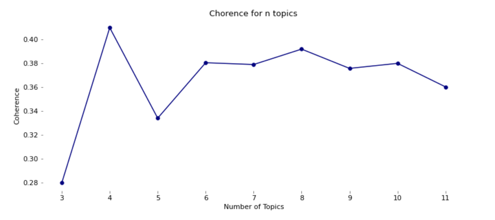

The topic modelling part of this study aim to investigate what lyrics we actually listen to and fills our minds with when we play our favourite songs. We want to research if some topics are more popular than others and if the topics depend on the genre. Our study begins by looking at the most frequence words and see if some patterns can be drawn. Frome there we continue investigating the topics by cleaning the text and reducing the vocabulary size. The topic modelling is done on the cleaned data to reveal topics within the songs. In order to get an even deeper insight into the music industri we investigate each genre at a time to see if they have their own individual topics. The goal is to understand the words we listen to and to discover if the topics and messages from the lyrics depends on our choice of genre.
The study will use Latent DirichletAllocation (LDA) to perform topic modeling on the data. The LDA model consists of two main procedures; generating topics and assigning topics to each text. Each text will then be described by a distribution of topics and each topic can in turn be described by a distribution of words. A necessary step for all topic models is to reduce corpus dimensionality, i.e. the total number of unique words, as much as possible prior to model implementation. The main reason being that unnecessary words adds too much noise when finding meaningful patterns.
As a priliminary investigation we look at the most frequence words within all songs to investigate if some topics is revealed.
Top 10 most common words in the dataset:
| Word | I | the | you | a | to | my | me | and | in | it |
|---|---|---|---|---|---|---|---|---|---|---|
| Count | 3813 | 3420 | 3015 | 2082 | 1950 | 1707 | 1512 | 1300 | 1234 | 1216 |
The aim of text cleaning is to significantly reduce corpus dimensionality. The quality of the definitive topics is highly dependent on the quality of the input data for the model. The lyrics will undergo four different cleaning steps in order to produce the input for the topic model. Below an overview of the full cleaning process canbe seen and the resulting vocabulary size after having applied the different cleaning techniques.
Starting with the raw corpus of 12,647 unique words reduced to 2,810 words in the ultimate output yields a total word reduction of 78%.
The four procedural steps are to be explained:
1. Noice
First, a preliminary noise cleaning of the text data is carried out, in which all words are transformed into lowercase capitalization, ordinary stop-words such as ”the”, ”have” and ”should” are removed along with non-alphabetic characters (!?,.). It is followed by lemmatization to extract the dictionary form of all words.
2. Rare and short words
A simple but efficient text cleaning step in terms of vocabulary reduction, is to remove rare and short words. All words that are only mentioned one time in the entire dataset of lyrics are deemed too unique and without importance, hence they are deleted. The same applies to words of only one character.
3. Only noun, verb and adj
All words that are not labeled ”noun”, ”verb” or "adj" are removed as it is expected that the nouns, verbs and adjectives carry most information on the message of a song.
4. Meaningless words
As the larst cleaning step we looked at the frequency words and removed words with no particulary meaning for the overall messages. This will help the model perform.
The text cleaning of the lyrics is now finalized and unimportant words have been removed. The cleaned data is not ready to be used as input for a topic model.
It is of interest to examine the most frequent terms after the cleaning to detecting if possible topics appears now.
Top 10 most common words after cleaning
| Word | love | nigga | baby | bitch | fuck | life | shit | money | good | play |
|---|---|---|---|---|---|---|---|---|---|---|
| Count | 569 | 400 | 327 | 268 | 207 | 203 | 188 | 171 | 166 | 159 |
As hoped the top frequency words for the cleaned data indicates and reveals some possible topics, both some romance, wealth and hate.
The topic model is implemented to generate topics and label each song with the most appropriate topic.
Based on a measure of coherence,the model determines the most optimal number of topics to represent the data.

As per the coherence measure,n=6 topics yield the most optimal representation. The LDA generated topics cn be seen below including relevant keywords and their respective average sentiment score.
| Topic | Keywords | Avg. sentiment score | Number of songs |
|---|---|---|---|
| (1) Violent gangster | money, nigga, shit, hit | 0.22 | 46 |
| (2) Ups and downs in romance | love, heart, pain, lose, try | 0.21 | 52 |
| (3) Breaking rules | bitch, cheat, play, fuck | 0.10 | 62 |
| (4) Life experience | world, mine, fine, dream, die | 0.58 | 101 |
The table above shows that topic 3 is the most negative topic and topic 4 is the most positive. This does allign with the keywords for each of the topics. Furthermore it can be seen that the largest topics within songs is topic 4. That the most positive topic also is the largest fits with the fact that the sentiment analysis showed most positive songs.
Below you see an interactive LDA visualizer, which has been used to examine generated topics. The chart to the left illustrate how separated the classes are whereas the chart to the right shows the words that reprsents the topics ordered by relevance depending on the tunable lambda-parameter. The λ-parameter represents the TF-IDF adjustment, which assigns less importance to words with high frequency count, λ=1 corresponds to importance by term frequency. Decreasing the parameter yields less importance to more frequently used words.
{% include lda.html %}dldldl...
LDA topic modelling is implemented on all genres in order to discover topics within each genre. We are interested in investgating if different genres has different topics in their lyrics.
The wordclouds below illustrates words within each topic. The size of the words represents their relative relevance.

h